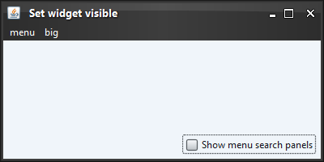
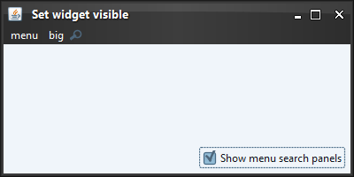

|
Sample code |
import java.awt.BorderLayout;
import java.awt.FlowLayout;
import java.awt.event.ActionEvent;
import java.awt.event.ActionListener;
import javax.swing.*;
import org.pushingpixels.substance.api.SubstanceLookAndFeel;
import org.pushingpixels.substance.api.SubstanceConstants.SubstanceWidgetType;
import org.pushingpixels.substance.api.skin.BusinessBlackSteelSkin;
/**
* Test application that shows the use of the
* {@link SubstanceLookAndFeel#setWidgetVisible(JRootPane, boolean, SubstanceWidgetType...)}
* API.
*
* @author Kirill Grouchnikov
* @see SubstanceLookAndFeel#setWidgetVisible(JRootPane, boolean,
* SubstanceWidgetType...)
*/
public class SetWidgetVisible extends JFrame {
/**
* Creates the main frame for <code>this</code> sample.
*/
public SetWidgetVisible() {
super("Set widget visible");
this.setLayout(new BorderLayout());
// create sample menu bar with two menus
JMenuBar jmb = new JMenuBar();
JMenu menu = new JMenu("menu");
menu.add(new JMenuItem("test item 1"));
menu.add(new JMenuItem("test item 2"));
menu.add(new JMenuItem("test item 3"));
menu.addSeparator();
menu.add(new JMenuItem("test menu item 4"));
menu.add(new JMenuItem("test menu item 5"));
menu.add(new JMenuItem("test menu item 6"));
jmb.add(menu);
JMenu menu2 = new JMenu("big");
for (int i = 0; i < 35; i++)
menu2.add(new JMenuItem("menu item " + i));
jmb.add(menu2);
this.setJMenuBar(jmb);
JPanel controls = new JPanel(new FlowLayout(FlowLayout.RIGHT));
final JCheckBox showMenuSearchPanels = new JCheckBox(
"Show menu search panels");
showMenuSearchPanels.setSelected(false);
showMenuSearchPanels.addActionListener(new ActionListener() {
public void actionPerformed(ActionEvent e) {
SwingUtilities.invokeLater(new Runnable() {
public void run() {
SubstanceLookAndFeel.setWidgetVisible(
SetWidgetVisible.this.getRootPane(),
showMenuSearchPanels.isSelected(),
SubstanceWidgetType.MENU_SEARCH);
}
});
}
});
controls.add(showMenuSearchPanels);
this.add(controls, BorderLayout.SOUTH);
this.setSize(400, 200);
this.setLocationRelativeTo(null);
this.setDefaultCloseOperation(JFrame.EXIT_ON_CLOSE);
}
/**
* The main method for <code>this</code> sample. The arguments are ignored.
*
* @param args
* Ignored.
*/
public static void main(String[] args) {
JFrame.setDefaultLookAndFeelDecorated(true);
SwingUtilities.invokeLater(new Runnable() {
public void run() {
SubstanceLookAndFeel.setSkin(new BusinessBlackSteelSkin());
new SetWidgetVisible().setVisible(true);
}
});
}
}
The screenshot below shows application frame with two menus:

The screenshot below shows the result of calling this API
with SubstanceWidgetType.MENU_SEARCH widget type.
Note the menu search widget after the second menu:

|